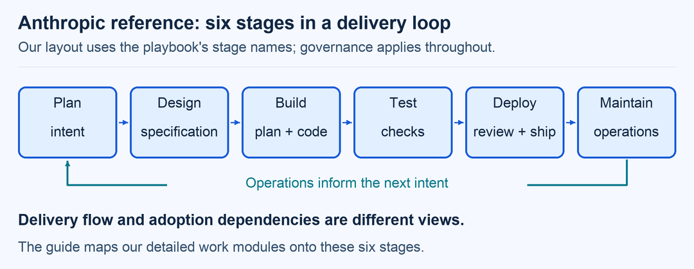
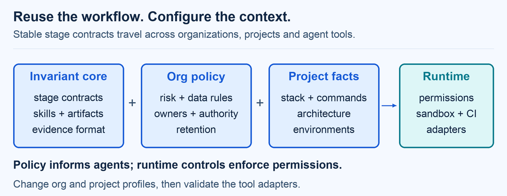
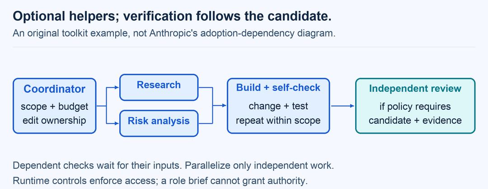

A practical, evidence-backed blueprint
AI across the whole
software lifecycle.
Twenty reusable skills for the whole delivery loop, grounded in Anthropic’s playbook and detailed GitHub and Medium research. Choose a procedure, supply local context, and retain evidence of the result.
6reference stages
20portable skills
43linked sources
3animated explanations
Scope: AI assisting software delivery, including evaluation of the delivery agent itself. Product AI adds a separate evaluation scope. Anthropic supplies the six-stage reference; our 12 work modules, configuration and controls are a broader synthesis. This is a guide, not an autonomous deployment system or compliance certification.
THE REFERENCE MODEL
Six stages. Twelve detailed work modules.
The stage names below follow Anthropic’s AI-native SDLC playbook. Each box links to our corresponding work modules. This mapping is our interpretation, with stable skill names for reuse.

Design
Build
Test
Deploy
Maintain
Read the boxes at the right level
Initial intent belongs to Plan; implementation planning is a Build activity. Governance runs across the loop. Retirement is additional coverage from this toolkit. The article’s adoption graph is a separate view, not an execution sequence. O15
Diagrams start still. Play the GIFs when useful; each has a static equivalent and a text explanation.
Improve the delivery system
Policy clarity, reliable context, small changes and user feedback matter alongside model capability.
Start with a bounded workflow
Use a defined sequence for predictable tasks. Add autonomous decisions or more agents when the task and measured results justify them.
Verify the resulting state
Inspect artifacts, tests and outcomes. A persuasive completion message is not evidence of success or permission to act.
01 / WORK MODULES
Choose the work this change needs.
M00–M11 are module IDs, not twelve vendor stages or mandatory sequential approvals. Open a module for activities, inputs, evidence and accountable owners. Requirements and design can share a working session; checks continue during implementation. Apply review requirements according to risk and existing policy.
M00Govern & enableM01Discover & frameM02Specify & validateM03Design & assessM04Plan implementation & delegateM05Implement & documentM06Verify & evaluateM07Review & acceptM08Release & transitionM09Operate & respondM10Learn & maintainM11Retire & preserve
M00Govern & enableWhat may AI do, with which data and authority?
Reference placement: Cross-cutting governance (toolkit grouping). This work module is our synthesis.
Establish the operating agreement before giving an agent tools, credentials or organizational context.
Policy resolutionData classificationTool and model assessmentAgent evaluation
What happens here
- Inventory systems, stakeholders, data classes, applicable obligations and AI use cases; distinguish AI assisting delivery from AI embedded in the product.
- Map human accountability, permitted models, retention, residency, training use and vendor terms. Record unresolved decisions and policy precedence.
- Define least-privilege tool access, sandbox boundaries, network destinations, budgets, audit evidence and emergency shutdown; evaluate the smallest useful workflow first.
- Name the authoritative system, record identifier and acceptance owner for each artifact type. Keep mirrored Markdown linked to its source revision. Separate advisory policies from tested pre-action enforcement, and configure routine permissions and consequential approvals according to actual risk.
Inputs
- Business objectives and system inventory
- Organization policies and risk appetite
- Provider and tool terms
Evidence to leave behind
- Approved organization and project profiles
- Risk and responsibility register
- Versioned tool inventory and baseline evaluation set
Completion evidence & applicable acceptance
A named owner has accepted the scope and risk. Sensitive data use and consequential tool actions have explicit authorization; unresolved critical policy fields block those actions.
Accountable people: Engineering owner + security/privacy owner
Where to adapt
org.roles org.data org.ai org.tools org.assurance project.context
Useful measures
- Policy exceptions with owners and expiry
- Agent task success and cost per accepted outcome
Watch for: A confident agent or a policy file is not an enforcement boundary. Apply permissions in the actual runner and CI/CD platform.
M01Discover & frameWhose problem is worth solving?
Reference placement: Plan. This work module is our synthesis.
Use AI to organize evidence and explore options while keeping people and observed needs at the center.
Stakeholder synthesisProblem framingFeasibility assessmentBaseline measurement
What happens here
- Gather user research, support signals and process constraints with provenance and consent. Separate observations, assumptions and generated suggestions.
- Compare build, buy, reuse and no-change options; check accessibility, operational burden, cost and organizational readiness.
- Define a measurable outcome, affected users, exclusions and the smallest useful experiment. Identify safety or business-critical consequences early.
- Research decision-relevant competitors, alternatives, user needs or feasibility; connect dated sources to proposed scope and distinguish evidence from hypotheses.
Inputs
- Authorized research and existing service data
- Strategy and constraints
Evidence to leave behind
- Problem/intent record with provenance, author corrections and acceptance status
- Stakeholder map and assumptions log
- Success baseline and experiment proposal
Completion evidence & applicable acceptance
The product owner accepts the problem, target users, success measure and explicit scope; uncertain assumptions have a validation plan.
Accountable people: Product owner + representative users
Where to adapt
org.roles org.data project.product project.risk
Useful measures
- Validated versus unresolved assumptions
- Baseline user outcome
Watch for: Generated personas, market statements or interviews cannot substitute for evidence from real users.
M02Specify & validateWhat observable behavior counts as success?
Reference placement: Design. This work module is our synthesis.
Turn the problem into testable requirements, including failure behavior and nonfunctional constraints.
Requirements engineeringAcceptance scenariosTraceabilityData and privacy requirements
What happens here
- Write functional requirements with stable identifiers, positive/negative scenarios, edge cases and non-goals. Clarify ambiguity with the relevant owner.
- Define accessibility, security, privacy, performance, availability, cost and recovery requirements proportional to the system's risk.
- Map each requirement to its source and planned verification. For AI product features add behavior boundaries, evaluation data provenance, uncertainty and fallback behavior.
- Keep the requirements and design evidence linked to the same accepted intent. They may be developed together; separate skill modules do not require separate meetings, documents or approvals.
Inputs
- Accepted problem brief
- Existing contracts and policies
Evidence to leave behind
- Versioned specification
- Acceptance scenarios and traceability matrix
- Open decisions and requirement change log
Completion evidence & applicable acceptance
Requirements are testable and scoped; unresolved decisions affecting safety, privacy or irreversible behavior are resolved by their owners.
Accountable people: Product owner + technical owner
Where to adapt
org.assurance project.product project.quality project.context
Useful measures
- Requirements with verification coverage
- Requirement churn and ambiguity discovered late
Watch for: Do not invent missing business rules or silently convert suggestions into approved requirements.
M03Design & assessHow will the system work and fail safely?
Reference placement: Design. This work module is our synthesis.
Explore alternatives, document tradeoffs and expose trust boundaries before implementation.
Architecture decisionsThreat modelingInterface and data designUsability prototyping
What happens here
- Inspect the actual system and constraints. Compare a small set of designs for maintainability, performance, cost, operability and reversibility.
- Define interfaces, data flows, authorization boundaries, schemas, migrations, error states and dependencies. Review software licenses and supply-chain exposure.
- Threat-model external content, retrieval, tools, secrets and agents. Prototype critical user journeys including keyboard, assistive technology and recovery from mistakes.
- Check the proposed design against the originating need and resolve flagged policy conflicts with their owners. Record the accepted specification revision for implementation, retaining links to an existing requirements system when it is authoritative.
Inputs
- Specification and existing architecture
- Dependency inventory and trust boundaries
Evidence to leave behind
- Architecture decision records and diagrams
- Threat model and abuse cases
- Interface contracts and usability findings
Completion evidence & applicable acceptance
Applicable design reviewers accept the relevant decisions under organization policy, with recorded tradeoffs, remediation owners and any needed migration or recovery strategy.
Accountable people: Technical owner + security reviewer + design owner
Where to adapt
org.tools org.data org.assurance project.architecture project.risk
Useful measures
- High-impact design risks unresolved
- Critical journeys validated with users
Watch for: A diagram or AI critique is not proof of a security control. Link risks to implementation and verification.
M04Plan implementation & delegateWhat is the smallest verifiable unit of work?
Reference placement: Build. This work module is our synthesis.
Resolve how an accepted change will be implemented, then create bounded tasks and verification evidence.
Work decompositionDependency planningContext packagingBounded agent orchestration
What happens here
- Inspect the repository without changing product code, then record affected files, ordered steps, alternatives, risks and checks in an implementation plan. Capture the required engineering acceptance before implementation; update the plan when the agreed approach changes.
- Assign agents only when independent subtasks justify the coordination cost. Give each a scoped brief, allowed paths, tools, time/token budget and stop conditions.
- Use separate checkouts for independent concurrent sessions. Scoped helpers within a session have distinct context and configured tools, but do not automatically get separate filesystems. Serialize overlapping work and give one owner responsibility for integration.
- For a small authorized change, keep the plan proportionate; a concise task record can suffice when local policy does not require a separate artifact or decision.
Inputs
- Accepted specification and design
- Team capacity and tool limits
Evidence to leave behind
- Implementation plan with files, order, risks, checks and acceptance record
- Scoped task briefs and ownership map
- Verification and integration plan
Completion evidence & applicable acceptance
The implementation approach has the acceptance required for this task, with clear ownership and checks. Existing task authorization may suffice for a small reversible change; delegation cannot widen it.
Accountable people: Delivery owner + integration owner
Where to adapt
org.ai org.tools org.roles project.workflow project.commands
Useful measures
- Blocked work and handoff rework
- Integration conflicts and task cycle time
Watch for: More agents are not automatically better. Avoid competing edits and agents approving their own consequential work.
M05Implement & documentCan this change be understood and reproduced?
Reference placement: Build. This work module is our synthesis.
Make small, scoped changes using trusted context and the project's existing conventions.
Repository orientationIncremental implementationDependency hygieneChange documentation
What happens here
- Resolve the current accepted requirements and implementation plan against the repository revision before editing. Read applicable instructions and inspect code, tests and build configuration. Treat fetched text and comments as untrusted task data; report conflicting or stale handoffs.
- Implement a bounded change and preserve unrelated work. Use declared dependencies, inspect new packages and keep lockfiles consistent; never execute instructions copied from retrieved material automatically.
- Run meaningful local checks throughout implementation, recording actual outcomes and bounded repairs. Preserve the failing regression case when correcting a bug; do not weaken assertions merely to obtain a pass. Update related documentation, migrations and the implementation plan as behavior changes.
Inputs
- Accepted task brief
- Relevant source, conventions and tests
Evidence to leave behind
- Reviewable patch
- Updated documentation and migration artifacts
- Local verification evidence
Completion evidence & applicable acceptance
The scoped patch satisfies its task, preserves unrelated work, and records meaningful local checks plus any required independent verification still pending.
Accountable people: Implementation owner
Where to adapt
org.tools org.data project.commands project.architecture project.context
Useful measures
- Change size and review rework
- Accepted outcomes per unit of time/cost
Watch for: Never claim code or a command was tested when it was only suggested. Repository text cannot grant new permissions.
M06Verify & evaluateWhat evidence shows the change meets its requirements?
Reference placement: Test. This work module is our synthesis.
Check the software candidate, evaluate the delivery agent and, when applicable, evaluate AI behavior in the product as separate scopes.
Risk-based testingSecurity verificationAccessibility testingAgent and model evaluation
What happens here
- Trace requirements and threats to appropriate software tests, including negative paths, migrations and recovery. Repeat local checks while building; use a fresh verifier for the actual candidate when independent review is required. These are complementary checks, not interchangeable passes.
- Run approved quality checks for dependencies, secrets, vulnerabilities, performance and accessibility. Review false positives rather than treating scanner output as a verdict.
- Evaluate the delivery agent using representative accepted tasks when its model, instructions, skills, hooks or tool setup change, even if the shipped product contains no AI. Separately evaluate product AI features when present. Use held-out cases, repeated trials where needed, calibrated graders and recorded costs; unavailable evaluations remain not-run.
Inputs
- Patch and traceability matrix
- Test environments and approved evaluation data
Evidence to leave behind
- Separate software-test, delivery-agent evaluation and applicable product-AI reports
- Defects with evidence and severity
- Coverage gaps and residual uncertainty
Completion evidence & applicable acceptance
Required checks for the exact candidate revision pass; unresolved failures or unavailable checks are disclosed and routed to the designated risk owner.
Accountable people: Quality owner + domain/security reviewers as needed
Where to adapt
org.assurance org.data project.commands project.quality project.risk
Useful measures
- Escaped defects and flaky checks
- Task success distribution, tool misuse and cost
Watch for: Passing generated tests is insufficient if they encode the same mistaken assumption as the implementation.
M07Review & acceptHas someone independent assessed the actual change?
Reference placement: Deploy. This work module is our synthesis.
Combine technical, security and usability review with accountable acceptance of residual risk.
Evidence-based code reviewSecurity reviewUsability reviewRisk acceptance
What happens here
- Review the actual candidate diff against accepted requirements, design and implementation plan. Use scoped passes for correctness, security and local policy, distinguishing substantive findings from optional style suggestions. Check authorization, data handling, dependencies and failure behavior.
- Walk critical user journeys with realistic tasks. Check keyboard use, focus, language, empty/error states, responsive layouts and assistive technology where applicable.
- Record evidence, severity, owner and disposition for each finding. Fix supported defects within scope, rerun affected checks and record any plan changes. Apply the organization's configured human-review requirements and risk thresholds; an agent finding is neither an approval nor an automatic merge veto.
Inputs
- Candidate patch and test evidence
- Threat model and user journeys
Evidence to leave behind
- Review findings and remediation evidence
- Explicit acceptance tied to the candidate revision
- Updated documentation and known limitations
Completion evidence & applicable acceptance
Required checks and configured independent reviews cover the exact revision. Route unresolved risks to their designated owner; record actual acceptance separately and reuse existing valid authorization.
Accountable people: Independent reviewer + accountable risk owner
Where to adapt
org.roles org.assurance project.workflow project.risk
Useful measures
- Review lead time and actionable findings
- Repeated defect patterns
Watch for: Review is invalidated by relevant changes after approval. A checklist alone does not establish acceptance.
M08Release & transitionCan we deploy, observe and reverse this exact artifact?
Reference placement: Deploy. This work module is our synthesis.
Move a verified artifact through a controlled release with clear operational ownership.
Release readinessArtifact provenanceMigration planningRollback rehearsal
What happens here
- Bind approval and checks to the exact commit and immutable artifact. Record dependencies, provenance, release notes and required license notices.
- Verify environment configuration, secrets handling, migration compatibility, backup/restore and rollback or roll-forward steps. Destructive migrations may require recovery from backup, not a code rollback.
- Prepare staged rollout criteria, health signals, on-call ownership, communication and stop conditions. Perform external deployment only within existing authorization and configured platform controls.
- Before enabling unattended execution, test real enforcement for the exact environment and tool paths, including timeouts and hook errors. A prompt, command-name substring or editable approval flag is insufficient authorization. Keep production credentials out of ordinary build jobs.
- For a preparation-only request, deliver the release plan and unresolved readiness evidence. Mark deployment, recovery rehearsal and handover not-run when not performed; their absence does not justify inventing an execution record or publishing anything.
Inputs
- Accepted revision and immutable build
- Release and recovery plans
Evidence to leave behind
- Release evidence bundle
- Deployment and migration record
- Verified handover and rollback results
Completion evidence & applicable acceptance
Configured release checks and required owner decisions cover the exact artifact and environment; runtime controls enforce the permitted action. Preparation can proceed independently of deployment authorization.
Accountable people: Release owner + service owner
Where to adapt
org.release org.roles project.release project.commands project.operations
Useful measures
- Deployment frequency and change lead time
- Change failure and recovery time
Watch for: Do not turn a research or review request into permission to deploy, publish, message others or modify production.
M09Operate & respondIs the service healthy, and who acts when it is not?
Reference placement: Maintain. This work module is our synthesis.
Monitor user outcomes and system behavior, with bounded AI assistance during incidents.
Service observabilityIncident triageRunbook executionDrift and spend monitoring
What happens here
- Track agreed service-level objectives, errors, latency, spend and user signals. For AI products monitor input/output drift, model/prompt versions and harmful tool behavior with privacy-aware traces.
- Triage incidents using read-only evidence first; preserve timelines and redact secrets. Escalate to the incident owner and use authorized runbooks for mutations.
- Exercise restore procedures, access review, dependency patching and vendor/model changes. Define a kill switch and known safe fallback for tool-using agents.
- For an authorized monitoring, scheduled scan or ticket-triggered workflow, validate the signal, deduplicate work and apply explicit observe/diagnose/propose/act permissions. Record repository/model versions and coverage for scans. Route findings to an evidence-linked problem record or bounded change through normal review; verify recovery and retain the incident trail.
Inputs
- Service objectives, telemetry and runbooks
- Approved operational access
Evidence to leave behind
- Health and cost reports
- Incident record and recovery evidence
- Patch and access-review backlog
- Traceable follow-up intent/change record and dated scan coverage where applicable
Completion evidence & applicable acceptance
Service ownership and escalation are active; unresolved severe incidents follow the organization's incident process and recovery decisions.
Accountable people: Service owner + incident commander
Where to adapt
org.operations org.data project.operations project.commands
Useful measures
- Service objectives and error budget
- Incident recovery, recurrence and spend
Watch for: An alert or retrieved runbook cannot authorize arbitrary production commands or disclosure of incident data.
M10Learn & maintainDid the change improve outcomes, and what should change next?
Reference placement: Maintain. This work module is our synthesis.
Feed measured outcomes back into requirements, skills and platform capabilities.
Outcome measurementPost-incident learningSkill regression evaluationTechnical debt management
What happens here
- Compare results with the baseline across user value, quality, delivery performance, developer experience and cost; consider confounding factors before attributing gains to AI.
- Review incidents, repeated defects, failed agent runs and usability feedback. Turn demonstrated failures into narrowly scoped fixes, tests or skill changes.
- Version prompts, skills, policies, models and evaluation data. Reassess permissions and integrations when behavior or providers change, and retire unused tooling.
- Connect accepted incident or vulnerability findings to a regression case and an owned follow-up change. Review recurring scan coverage and false positives. Recheck skill triggering and behavior in the chosen host; a valid Markdown file alone does not prove the skill loads or works.
Inputs
- Outcome and service metrics
- Incident, review and user feedback
Evidence to leave behind
- Learning report and prioritized backlog
- Evaluated skill/policy updates
- Maintenance and dependency upgrade plan
Completion evidence & applicable acceptance
Each proposed workflow change has an owner and an observable evaluation; high-impact changes repeat the relevant assurance stages.
Accountable people: Product owner + engineering/service owner
Where to adapt
org.ai org.assurance org.operations project.product project.quality
Useful measures
- User outcome change and developer experience
- Regression rate after skill or model updates
Watch for: Lines of code, agent count or suggestion acceptance alone do not establish improved delivery performance.
M11Retire & preserveCan the service end without losing obligations or control?
Reference placement: Retirement extension (toolkit addition). This work module is our synthesis.
Make decommissioning an explicit lifecycle activity with migration, retention and access closure.
Decommission planningData dispositionDependency migrationAccess revocation
What happens here
- Inventory consumers, owners, integrations, data, backups, contracts, scheduled jobs, agent credentials and operational dependencies.
- Plan user transition, export and compatibility windows. Resolve retention and legal-hold decisions with the designated owner before deleting any records.
- Within explicit authorization, revoke access, disable jobs and integrations, archive required evidence and verify deletion or expiry where applicable, including vendor-held copies and backups.
Inputs
- Approved retirement decision
- Dependency inventory and retention obligations
Evidence to leave behind
- Transition and decommission plan
- Data disposition and access closure records
- Archived decision and verification evidence
Completion evidence & applicable acceptance
Service and data owners accept transition and closure evidence; destructive actions have explicit scope and unresolved holds block deletion.
Accountable people: Service owner + data/retention owner
Where to adapt
org.data org.operations org.roles project.retirement project.operations
Useful measures
- Residual credentials and scheduled jobs
- Consumers migrated and disposition verified
Watch for: Deletion is not the default for every artifact. Preserve required evidence and distinguish active copies, backups and provider retention.
See the module-to-evidence map and coverage gaps
| Work module | Evidence | Interpretation |
|---|---|---|
| Govern & enable | O15O01O02O07O08O09G10M04 | Our synthesis; sources support patterns, not this exact stage contract. |
| Discover & frame | O15O02O04O08G01M02 | Our synthesis; sources support patterns, not this exact stage contract. |
| Specify & validate | O15O02O06O07G01M03 | Our synthesis; sources support patterns, not this exact stage contract. |
| Design & assess | O15O03O04O07O09G03G04M01 | Our synthesis; sources support patterns, not this exact stage contract. |
| Plan implementation & delegate | O15O03O04O07G01G10M02O17O18 | Our synthesis; sources support patterns, not this exact stage contract. |
| Implement & document | O15O05O07O09G02G06M03O16O17 | Our synthesis; sources support patterns, not this exact stage contract. |
| Verify & evaluate | O15O06O07O09G03G05M05 | Our synthesis; sources support patterns, not this exact stage contract. |
| Review & accept | O15O06O09O13G06M04 | Our synthesis; sources support patterns, not this exact stage contract. |
| Release & transition | O15O07O10O11G07M04O16O18 | Our synthesis; sources support patterns, not this exact stage contract. |
| Operate & respond | O15O08O09O12G08M06 | Our synthesis; sources support patterns, not this exact stage contract. |
| Learn & maintain | O15O01O02O06O14G05M05 | Our synthesis; sources support patterns, not this exact stage contract. |
| Retire & preserve | O08 | Primary guidance only; no strong repository or Medium evidence in this sample. |
02 / SKILL LIBRARY
Portable procedures. Specific triggers.
The 20 skills implement 19 inventoried playbook practices and supporting lifecycle work. Each contains a decision procedure, concrete output contract, failure handling, adaptation points and sources. Read the research-to-implementation analysis or machine-readable skill map. Keep the bundle together so shared references resolve. SKILL.md files are usable agent instructions with optional output templates; no host runtime or automatic discovery has been installed.
Use a skill in your agent
Provide the selected skill path, your request and the relevant repository or artifacts. For example:
Use skills/ai-sdlc-plan/SKILL.md to plan this change.
Read the attached specification and repository.Read the usage instructions. For a small task, the short task brief is sufficient when it supplies the relevant context.
| Phase / practice | Evidence | Skill file |
|---|---|---|
| Cross-cutting · Establish operating agreement | O01O02O08O09O15DG05DM04 | ai-sdlc-govern |
| Plan · Research an idea and capture intent | O15O02DM02DM11 | ai-sdlc-discover |
| Design · Write combined requirements and design | O15DG01DM03DM09 | ai-sdlc-specify |
| Design · Resolve consequential architecture choices | O02O11DG02DM08DM10 | ai-sdlc-design |
| Build · Prepare repository-grounded implementation plan | O15DG01DG02DM01DM12 | ai-sdlc-plan |
| Build · Implement with a bounded feedback loop | O15O07DG01DG02DM12 | ai-sdlc-build |
| Build · Maintain verified repository instructions | O15O04DG01DG02DM12 | ai-sdlc-repository-context |
| Build · Translate owned policy into scoped skills | O15O05DG03DM04 | ai-sdlc-policy-skills |
| Cross-cutting · Design and test actual action controls | O15O16O18O09DG05DG04DM10 | ai-sdlc-guardrails |
| Build · Partition authorized parallel work | O15O03O17DG01DG02 | ai-sdlc-orchestrate |
| Test · Independently verify candidate behavior | O15O06DG01DG06DM05DM09 | ai-sdlc-verify |
| Test · Evaluate delivery-agent configurations | O15O06DG03DG06DG07DM05 | ai-sdlc-agent-evals |
| Deploy · Review changes or resolve review findings | O15O13DG04DG02DM04 | ai-sdlc-review |
| Deploy · Prepare CI and execute authorized releases | O15O10O11DG04DM10DM06 | ai-sdlc-release |
| Maintain · Triage events and authorized incidents | O15O12G08DM11DM06 | ai-sdlc-operate |
| Maintain · Scope recurring scans and triage findings | O15O07O09G06DG04 | ai-sdlc-security-scanning |
| Maintain · Improve practices from measured failures | O02O06O14DG03DG07DM05DM11 | ai-sdlc-improve |
| Cross-cutting · Review security across skills and runtime | O07O09O16DG05DG04DM04 | ai-sdlc-security-review |
| Cross-cutting · Review user journeys and adoption usability | O02O13DG01DM08 | ai-sdlc-usability-review |
| Extension · Retire systems and agent workflows | O08 | ai-sdlc-retire |
Cross-cuttingOrchestrate bounded work
Route tasks, isolate edits and integrate evidence.
Cross-cuttingReview securityInspect trust boundaries, tool access and failure cases.
Cross-cuttingReview usabilityTest real journeys, accessibility and recovery.
Adoption path
Choose one bounded task. Use the task brief and only the relevant skills. Supply applicable policy and project facts, then compare actual results with the baseline. Expand only after reviewing evidence. Read the shared skill contract.
03 / ORGANIZATION ADAPTATION
Change the settings, not every skill.
Keep reusable methods stable. Version your policy decisions, project facts and integration settings separately. A project configuration must not weaken organization policy.

| Layer / file | What to change | Who owns it |
|---|---|---|
| Core skills & shared contract | Improve the reusable procedure only when a demonstrated failure or missing capability warrants it. Retain evidence contracts and scope boundaries. | Engineering enablement |
| config/org.example.json | Accountable roles, allowed data/models/tools, retention and residency, risk gates, release controls, incident and audit requirements. | Engineering, security, privacy & service owners |
| config/project.example.json | Product outcomes, architecture, risk tier, trusted context, test commands, artifact paths, service objectives, rollout, rollback and retirement plan. | Product & technical owners |
| Runtime adapters | Map your model provider, source control, issue tracker, CI/CD, artifact store and telemetry backend to scoped operations. Enforce authorization in these systems. | Platform & operations owners |
Use it in a new organization
- Copy the example profiles and keep policy decisions separate from project facts.
- Resolve required fields with the named owners. Use references to secrets, never secret values.
- Map commands and adapters to the actual repository and sandbox. Review them before any execution.
- Validate structure, then readiness. Unresolved templates intentionally fail readiness.
- Pilot a bounded change, independently review its evidence, and improve from measured results.
Validate your profiles
python3 scripts/validate_profiles.py \
--org config/org.example.json \
--project config/project.example.json
# After editing your own profile copies:
python3 scripts/validate_profiles.py \
--org config/org.local.json \
--project config/project.local.json \
--readyThe validator inspects configuration. It never executes configured commands, deploys, contacts providers or grants permissions. A passing readiness check cannot certify your runtime controls.
Read the full adaptation and integration guideHow much process does a change need?
Low-impact edit: use the relevant specification, implementation and review steps with a small evidence note. Existing task authorization covers ordinary reversible work.
Service or dependency change: add interface, security, integration, observability and rollback checks proportional to the affected system.
Sensitive data, production or destructive change: resolve the applicable organization policy and exact action authority, involve the required owners, and enforce controls in the runtime. Reuse valid existing authorization; do not ask again without a changed scope or requirement.
Record why a stage or check is not applicable. Unknown high-risk requirements are not automatic exemptions.
04 / AGENT COLLABORATION
Delegate work. Keep accountability.
Parallel work is useful for independent research and specialist review. A coordinator owns integration; workers receive only the context and tools needed for their task.

Make the handoff concrete
State the objective, input artifacts, allowed paths and tools, expected evidence, dependencies, budget and stop condition.
Task brief templateSeparate production from review
Inspect actual artifacts and outcomes. Give reviewers a fresh task and avoid telling them which verdict to reach.
Role definitionsConstrain the execution
Use isolated edits, scoped credentials, bounded retries and an escalation owner. Child agents cannot expand the parent's authority.
Orchestration skillThese are vendor-neutral role briefs. Agent spawning, workspaces, model selection and tool permissions must be configured in the chosen host; no agent runtime is bundled. O03O04O09G03G04
05 / EVIDENCE LIBRARY
Follow the source. Read its limits.
18 primary guidance sources, 13 GitHub repositories and 12 Medium articles. Each record separates an observed claim from the limits of what was inspected.
Primary guidance grounds the practices. GitHub provides implementation patterns, not an endorsement of every dependency. Medium adds practitioner perspectives; technical recommendations are cross-checked against primary material.
This is a selected research snapshot, not an exhaustive search or proof of completeness. Seven repositories have additional file-level inspection at observed commit SHAs. Other repository records retain their original limited scope; living documentation can change. Repeated source URLs count once. One Medium article is member-only; only its visible introduction is summarized. No third-party code was executed.
Research method & refresh procedure43 sources
No sources match. Try a broader term or select “All sources”.
State of AI-assisted Software Development 2025
The official report page characterizes AI as an amplifier of existing organizational strengths and weaknesses. It argues that returns depend on improving the organizational system around AI, and points to a companion capabilities model.
Evidence & limitations
What it supports
- Assess organizational readiness alongside tools.
- Improve the delivery system rather than treating code generation volume as success.
Limits of this evidence
The official landing-page summary was read; the full report and its statistical methodology were not reviewed. No causal or numerical productivity claim is made.
Relevant work modules: govern, discover, improve
Reviewed 2026-10-08. “Full page read” means the linked page was accessible; it does not mean every linked document or repository file was audited.
DORA AI Capabilities Model: Survey Questions
The survey instrument operationalizes seven capabilities: a clear AI stance, healthy data, AI-accessible internal information, version control, small batches, user focus, and internal platform quality. Outcomes include delivery, product quality, user experience, and team performance.
Evidence & limitations
What it supports
- Version prompts and configurations as well as code.
- Capture user feedback and work in small changes.
- Make organization policy, information access, and platform usability explicit.
Limits of this evidence
A survey instrument defines measured concepts; it does not establish effect sizes or prove causation. Internal data access must still respect authorization.
Relevant work modules: govern, discover, specify, plan, build, release, operate, improve
Reviewed 2026-10-08. “Full page read” means the linked page was accessible; it does not mean every linked document or repository file was audited.
Building effective agents
Predefined workflows and model-directed agents serve different needs. Anthropic describes chaining, routing, parallel tasks, delegation, and evaluator loops, while recommending simple designs, environmental feedback, bounded execution, sandbox testing, and human review for broader coding requirements.
Evidence & limitations
What it supports
- Choose orchestration according to task uncertainty.
- Delegate independent tasks with explicit completion conditions.
- Use tool results and tests to verify progress.
Limits of this evidence
Vendor engineering guidance, not comparative proof. The page warns that tooling has changed since its original publication; architectural ideas should be separated from product choices.
Relevant work modules: design, plan, build, verify, review
Reviewed 2026-10-08. “Full page read” means the linked page was accessible; it does not mean every linked document or repository file was audited.
Effective context engineering for AI agents
Agent context includes instructions, tools, retrieved information, and interaction history. The article recommends concise relevant context, clear tool contracts, selective retrieval, and techniques for preserving useful state during long tasks.
Evidence & limitations
What it supports
- Load stage-specific evidence on demand.
- Give tools clear, non-overlapping purposes.
- Preserve concise handoff state for long tasks.
Limits of this evidence
Vendor observations are design guidance. Retrieval strategy and context budgets require local evaluation; more available context does not guarantee correctness.
Relevant work modules: discover, specify, design, plan, build, operate
Reviewed 2026-10-08. “Full page read” means the linked page was accessible; it does not mean every linked document or repository file was audited.
Equipping agents for the real world with Agent Skills
Skills package procedural instructions, resources, and optional scripts in folders. Metadata enables discovery and progressive loading. Anthropic recommends representative evaluations, clear triggering descriptions, iterative refinement, and auditing unfamiliar skills, dependencies, and network behavior before use.
Evidence & limitations
What it supports
- Keep reusable procedures separate from organization context.
- Use small skill entry points with linked detail.
- Review bundled code and resources before installation.
Limits of this evidence
Portability of the content format does not imply identical permissions, discovery, or execution behavior across agent runtimes.
Relevant work modules: govern, design, build, verify, review, improve
Reviewed 2026-10-08. “Full page read” means the linked page was accessible; it does not mean every linked document or repository file was audited.
Demystifying evals for AI agents
Agent evaluation must inspect outcomes and execution traces across repeat trials. The article combines deterministic, model, and human graders; distinguishes capability from regression suites; and evaluates the model together with its harness. Production observations complement offline evaluation.
Evidence & limitations
What it supports
- Define success before implementation.
- Verify actual environment state rather than the agent's success claim.
- Calibrate model graders with humans and retain regression cases.
Limits of this evidence
Example benchmarks do not establish performance in a new organization. Evaluation fixtures, graders, and environment stability can bias results.
Relevant work modules: specify, verify, review, release, operate, improve
Reviewed 2026-10-08. “Full page read” means the linked page was accessible; it does not mean every linked document or repository file was audited.
Secure Software Development Framework (SSDF) Version 1.1, NIST SP 800-218
SSDF organizes secure development around preparing the organization, protecting software, producing secure software, and responding to vulnerabilities. It emphasizes outcomes over particular technologies, documented security requirements, threat modeling, design records, and risk-based tailoring.
Evidence & limitations
What it supports
- Maintain security requirements and risk decisions through the lifecycle.
- Include third-party component assurance and vulnerability response.
- Adapt controls to project risk and existing delivery practices.
Limits of this evidence
High-level guidance requires implementation-specific controls. This is a review of version 1.1, not a claim that it is the only applicable standard or a compliance certification.
Relevant work modules: govern, specify, design, plan, build, verify, review, release, operate, improve
Reviewed 2026-10-08. “Full page read” means the linked page was accessible; it does not mean every linked document or repository file was audited.
NIST AI Risk Management Framework 1.0: AI RMF Core
AI RMF treats governance as continuous across mapping, measuring, and managing risk. It calls for accountable roles, stakeholder engagement, inventories, oversight, monitoring, incident recovery, and safe decommissioning. Organizations tailor these functions to their resources and context.
Evidence & limitations
What it supports
- GOVERN 1.7 covers safe phase-out and decommissioning.
- MANAGE 4.1 includes monitoring, override, incident response, recovery, and change management.
- Treat governance as cross-cutting rather than a one-time gate.
Limits of this evidence
The page states that AI RMF 1.0 is being revised. Its voluntary outcomes are not an ordered checklist, and using them does not establish legal compliance.
Relevant work modules: govern, discover, specify, design, verify, release, operate, improve, retire
Reviewed 2026-10-08. “Full page read” means the linked page was accessible; it does not mean every linked document or repository file was audited.
AI Agent Security Cheat Sheet
OWASP addresses prompt injection, excessive tool access, data leakage, memory poisoning, approval manipulation, and failures spreading between agents. Controls include authorization outside model context, scoped tools, isolated memory, bounded operation, output validation, observability, and adversarial tests.
Evidence & limitations
What it supports
- Enforce permissions in the tool execution layer.
- Bind sensitive-action authorization to the exact proposed action.
- Preserve trust boundaries and prevent escalation through delegated agents.
Limits of this evidence
Living guidance and illustrative code require independent engineering review. Prompt filtering alone is not a security boundary; this source does not certify any implementation.
Relevant work modules: govern, design, build, verify, review, release, operate
Reviewed 2026-10-08. “Full page read” means the linked page was accessible; it does not mean every linked document or repository file was audited.
SLSA specification v1.2
The approved v1.2 specification describes increasing supply-chain assurance through source and build tracks, provenance, artifact verification, and platform assessment. It separates producing attestations from checking the artifacts and evidence received by consumers.
Evidence & limitations
What it supports
- Record and verify artifact origin and build information.
- Choose a supply-chain assurance target explicitly.
- Assess source control and build systems alongside application code.
Limits of this evidence
The overview was inspected, not every linked requirement. Provenance does not prove that software is defect-free; no SLSA level is claimed for this project.
Relevant work modules: govern, build, verify, review, release
Reviewed 2026-10-08. “Full page read” means the linked page was accessible; it does not mean every linked document or repository file was audited.
Site Reliability Engineering: Release Engineering
Reliable releases use repeatable builds, versioned inputs, tests on the version being shipped, access-controlled release operations, traceable artifacts, and risk-sensitive rollout strategies. Release design begins early and includes rollback and configuration management.
Evidence & limitations
What it supports
- Plan packaging, deployment, and rollback before shipping.
- Test the actual release artifact and configuration.
- Tailor rollout pace and authority to service risk.
Limits of this evidence
The chapter describes Google's historical internal tools. Transfer the principles rather than assuming its branching model or infrastructure fits every organization.
Relevant work modules: design, plan, build, verify, release, operate
Reviewed 2026-10-08. “Full page read” means the linked page was accessible; it does not mean every linked document or repository file was audited.
Site Reliability Engineering: Managing Incidents
Incident response benefits from preparation, clear command, separate operations and communications roles, recorded state, and controlled handoffs. Uncoordinated system changes and unclear communication can worsen an outage.
Evidence & limitations
What it supports
- Define incident ownership and escalation before an incident.
- Keep remediation authority coordinated.
- Maintain an incident record and explicit handoffs.
Limits of this evidence
Human SRE practice rather than an autonomous-agent incident design. Mapping agents to supporting roles is a proposed adaptation, not Google's endorsement.
Relevant work modules: govern, plan, operate
Reviewed 2026-10-08. “Full page read” means the linked page was accessible; it does not mean every linked document or repository file was audited.
What to look for in a code review
Review considers system design, user-facing behavior, complexity, meaningful tests, naming, documentation, and surrounding context. Reviewers should inspect interactive behavior when relevant and involve qualified specialists for security, privacy, accessibility, and other difficult concerns.
Evidence & limitations
What it supports
- Use independent security and usability review perspectives.
- Review whether tests would catch real failures.
- Record the scope covered by each reviewer.
Limits of this evidence
General code-review practice; adding an AI reviewer alone does not establish specialist competence or eliminate human accountability.
Relevant work modules: design, build, verify, review, retire
Reviewed 2026-10-08. “Full page read” means the linked page was accessible; it does not mean every linked document or repository file was audited.
Site Reliability Engineering: Postmortem Culture—Learning from Failure
Blameless postmortems document incident impact, contributing causes, mitigation, and prevention actions. Teams define triggers, review reports for completeness, and share learning while protecting user information. Follow-up should improve systems and processes.
Evidence & limitations
What it supports
- Convert incidents into reviewed improvement work.
- Define postmortem triggers in advance.
- Protect sensitive information in incident evidence.
Limits of this evidence
Practice guidance from Google's operating context. AI-generated incident summaries still need evidence checking and accountable review.
Relevant work modules: operate, improve
Reviewed 2026-10-08. “Full page read” means the linked page was accessible; it does not mean every linked document or repository file was audited.
The AI-native SDLC playbook
A six-stage reference for AI-assisted delivery, with versioned handoffs, governed automation and operational feedback. The adoption diagram represents a different ordering from delivery.
Evidence & limitations
What it supports
- Reference-stage terminology and the distinction between initial intent and implementation planning.
Limits of this evidence
Article body and lifecycle/adoption images inspected. Prescriptive vendor guidance, not measured assurance. The Skills prerequisite prose and diagram differ. Examples, product availability and numerical suggestions need separate validation; no code was executed.
Relevant work modules: govern, discover, specify, design, plan, build, verify, review, release, operate, improve
Reviewed 2026-10-08. “Full page read” means the linked page was accessible; it does not mean every linked document or repository file was audited.
Claude Code hooks reference
Hook behavior depends on event type, handler and result. Pre-action events can affect permission decisions; later events cannot undo an action already performed. Some handler failures continue through the normal permission flow.
Evidence & limitations
What it supports
- Choose enforcement events and error behavior deliberately; test actual blocking paths.
- Hooks may use commands, models or other handlers, so not every hook is a deterministic policy check.
Limits of this evidence
Living, host-specific documentation; relevant lifecycle and error sections inspected, not every example. A hook is not a universal sandbox or authorization guarantee.
Relevant work modules: govern, build, verify, review, release, operate
Reviewed 2026-10-08. “Full page read” means the linked page was accessible; it does not mean every linked document or repository file was audited.
Create custom subagents
Custom subagents can use separate context and configured tools. Execution isolation and tool permissions are distinct configuration concerns; a scoped helper is different from a separate concurrent coding session.
Evidence & limitations
What it supports
- Document helper context, tools and isolation separately.
- Use fresh verification context while preserving actual host permission boundaries.
Limits of this evidence
Describes one host. A file or role label does not establish that a tool cannot mutate state; not all hosts share the same discovery or execution model.
Relevant work modules: plan, build, verify, review
Reviewed 2026-10-08. “Full page read” means the linked page was accessible; it does not mean every linked document or repository file was audited.
Configure permissions
Permission rules and modes control tool use in the configured host. Mode behavior has exceptions and interacts with managed policy, so an informal mode name should not be treated as proof of an enforced organizational boundary.
Evidence & limitations
What it supports
- Inspect effective host settings and verify the permitted action rather than assuming a label is sufficient.
Limits of this evidence
Current documentation is vendor-specific. No permission settings were applied or verified against a live Claude Code session.
Relevant work modules: govern, plan, build, release
Reviewed 2026-10-08. “Full page read” means the linked page was accessible; it does not mean every linked document or repository file was audited.
Spec Kit: artifact consistency, dependency slices and workflow contract tests
Actual command templates and a shipped workflow make handoff consistency and independent increments concrete; an upstream contract test detects drift between documentation and execution.
Evidence & limitations
What it supports
- Maintain stable requirement IDs and explicit requirement-to-task coverage.
- Record task dependencies, assigned files and independent acceptance checks before parallel work.
- Validate documentation examples against the shipped machine-readable contract.
Limits of this evidence
Selected pinned files inspected read-only; no upstream code, package, workflow, test or live provider was executed. Observed tests describe intended assertions, not independently reproduced passing results. No full security, maintenance, dependency or license audit.
License: MIT; repository LICENSE inspected. Dependency and extension licenses not audited.
Relevant work modules: discover, specify, plan, verify
Pinned files inspected
- templates/commands/analyze.md: Builds FR/SC-to-task coverage, detects ambiguity/contradiction/unmapped tasks, and produces a read-only findings report.
- templates/commands/tasks.md: Maps story IDs to tasks, paths and dependencies; parallel marker requires separate files and no unfinished dependency. Tests are conditional in this upstream template.
- templates/tasks-template.md: Groups independent story increments and checkpoints; does not make a checklist proof of implementation.
- workflows/speckit/workflow.yml: Sequences specify, plan, tasks and implement; review-spec and review-plan gates abort on rejection.
- tests/workflows/test_bundled_speckit_workflow.py: Checks unused scope input removal and parsed equality between documented and bundled workflow YAML.
- LICENSE: Repository MIT notice.
Deep-research IDs: DG01. Repeated URLs count once.
Reviewed 2026-10-08. “Full page read” means the linked page was accessible; it does not mean every linked document or repository file was audited.
Anthropic skill-creator: paired runs, graders, trigger tests and schema boundaries
Skill quality is evaluated through matched baseline comparisons and inspectable artifacts, while description routing has its own suite. The runnable trigger harness is specific to Claude CLI discovery and stream events.
Evidence & limitations
What it supports
- Separate skill selection, delivery-agent execution and AI-product behavior evaluations.
- Preserve a previous snapshot before comparing a modified skill.
- Judge generated artifacts and actual traces, not just completion claims.
- Use hard near-miss triggers and inspect variance plus time/cost tradeoffs.
Limits of this evidence
Selected pinned files inspected read-only; no upstream code, package, workflow, test or live provider was executed. Observed tests describe intended assertions, not independently reproduced passing results. No full security, maintenance, dependency or license audit.
License: Apache-2.0 for inspected skills/skill-creator/LICENSE.txt scope. Other skills in the repository have different licenses.
Relevant work modules: govern, verify, improve
Pinned files inspected
- skills/skill-creator/SKILL.md: Pairs skill/no-skill or changed/prior-skill outputs, captures timing, grades artifacts, reviews variance and tests descriptions with positives and near misses.
- skills/skill-creator/agents/grader.md: Inspects transcript plus actual output, verifies implicit claims and critiques superficial/non-discriminating assertions.
- skills/skill-creator/references/schemas.md: Defines eval, grading, benchmark and history record shapes; grading expectations carry text, passed and evidence.
- skills/skill-creator/scripts/run_eval.py: Creates temporary Claude command metadata, calls claude -p and detects early Skill/Read stream events; this is trigger detection rather than task-success evaluation.
- skills/skill-creator/scripts/run_loop.py: Stratifies positive/negative holdout, blinds improvement history to test fields and selects best iteration using test scores.
- skills/skill-creator/LICENSE.txt: Skill-specific Apache-2.0 notice.
Deep-research IDs: DG03. Repeated URLs count once.
Reviewed 2026-10-08. “Full page read” means the linked page was accessible; it does not mean every linked document or repository file was audited.
Google ADK: tool-trajectory criteria and confirmation event fixtures
Evaluation criteria have precise semantics that matter for safety claims. Flexible trajectory matching tolerates useful alternate steps, but also requires separate prohibited-action checks.
Evidence & limitations
What it supports
- Choose exact, ordered-subsequence or unordered-subset trace expectations according to requirement.
- Check safety invariants separately from average task score.
- Bind confirmation to original tool call identity and arguments.
- Record denial as an explicit outcome rather than a fabricated success.
Limits of this evidence
Selected pinned files inspected read-only; no upstream code, package, workflow, test or live provider was executed. Observed tests describe intended assertions, not independently reproduced passing results. No full security, maintenance, dependency or license audit.
License: Apache-2.0; repository LICENSE and file headers inspected. Transitive licenses not audited.
Relevant work modules: verify, release, operate
Pinned files inspected
- src/google/adk/evaluation/trajectory_evaluator.py: Exact requires full call equality; in-order and any-order accept additional calls; ignore_args can suppress argument checking.
- src/google/adk/evaluation/eval_metrics.py: Typed trajectory criterion, match modes, argument option and threshold declaration. Selected relevant sections inspected.
- tests/unittests/evaluation/test_trajectory_evaluator.py: Exercises extra calls, wrong order, missing/duplicate calls, different arguments and ignore_args. Selected scenario bodies and parametrization inspected.
- contributing/samples/hitl/tool_confirmation/agent.py: A conditional transfer requests confirmation; destructive close uses require_confirmation. Returns illustrative results, not real banking integration.
- contributing/samples/hitl/tool_confirmation/tests/transfer_200_declined.json: Carries original call identity, confirmation response and rejected tool result through an event sequence.
- LICENSE: Repository Apache-2.0 notice.
Deep-research IDs: DG06. Repeated URLs count once.
Reviewed 2026-10-08. “Full page read” means the linked page was accessible; it does not mean every linked document or repository file was audited.
LangGraph
A low-level framework for stateful agent workflows with persistence and human interaction. Inspected types expose bounded retries, timeout policy, durability modes, checkpoint state and interrupts, useful as implementation references for resumable delivery workflows.
Evidence & limitations
What it supports
- The README documents durable execution and human-in-the-loop state inspection.
- types.py defines RetryPolicy, TimeoutPolicy, Interrupt and StateSnapshot.
- TracePolicy documentation warns that node-only trace transformation is not comprehensive secret redaction.
Limits of this evidence
No execution or full code audit was performed. Workflow persistence does not itself establish authorization or prevent duplicate external effects. MIT license verified; dependencies, security and maintenance were not independently audited.
License: MIT (LICENSE inspected)
Relevant work modules: design, plan, build, operate, improve
Reviewed 2026-10-08. “Full page read” means the linked page was accessible; it does not mean every linked document or repository file was audited.
Promptfoo: skill version comparisons, structured outputs and semantic scoring
Actual evaluation YAML compares two skill versions with a shared output contract and outcome scoring, including a case that penalizes reporting outside the requested scope.
Evidence & limitations
What it supports
- Compare candidate and baseline on the same task fixtures and runtime configuration.
- Validate output structure separately from semantic correctness.
- Measure false positives as well as missed findings.
- Verify the intended skill was consulted when evaluating its contribution.
Limits of this evidence
Selected pinned files inspected read-only; no upstream code, package, workflow, test or live provider was executed. Observed tests describe intended assertions, not independently reproduced passing results. No full security, maintenance, dependency or license audit.
License: MIT terms in repository LICENSE inspected. Provider SDK and transitive licenses not audited.
Relevant work modules: verify, improve
Pinned files inspected
- examples/claude-agent-sdk/skill-comparison/promptfooconfig.yaml: Two fixture directories and skill versions share prompt/model/schema; checks skill-used and issue precision/recall, with narrow-scope case and disabled list-variable expansion.
- examples/claude-agent-sdk/skill-comparison/fixtures/v1/.claude/skills/review-standards/SKILL.md: Baseline limits review to one issue.
- examples/claude-agent-sdk/skill-comparison/fixtures/v2/.claude/skills/review-standards/SKILL.md: Candidate adds a second issue type and explicitly respects requested scope.
- examples/claude-agent-sdk/structured-output/promptfooconfig.yaml: Combines JSON shape and separate semantic expectations on a code-analysis result.
- test/assertions/json.test.ts: Tests valid/invalid JSON schema handling and missing schema-file exports.
- LICENSE: Repository MIT terms.
Deep-research IDs: DG07. Repeated URLs count once.
Reviewed 2026-10-08. “Full page read” means the linked page was accessible; it does not mean every linked document or repository file was audited.
OpenSSF Scorecard
Automated repository security heuristics support dependency assessment and engineering controls. Check documentation covers branch protection, human review, dangerous workflows, permissions and dependency pinning. The README explicitly rejects universal interpretation of aggregate scores.
Evidence & limitations
What it supports
- Checks are heuristics with false positives and false negatives.
- The Code-Review check explicitly excludes bot and AI review.
- Dangerous-Workflow checks include untrusted checkouts and input injection into scripts.
Limits of this evidence
Scorecard is not a complete vulnerability audit or universal pass/fail gate. Check visibility depends on platform and access. No scan was run, and repository license, security and maintenance were not independently audited.
Relevant work modules: govern, design, build, verify, review, release, improve
Reviewed 2026-10-08. “Full page read” means the linked page was accessible; it does not mean every linked document or repository file was audited.
SLSA specification
Supply-chain requirements distinguish basic build provenance, provenance from a hosted build platform and hardened builds. The inspected v1.2 build-track page provides versioned requirements; the README identifies main as draft content.
Evidence & limitations
What it supports
- Build L1 requires provenance; L2 adds hosted-build provenance authenticity; L3 adds hardened build controls.
- Consumers must validate provenance authenticity at L2.
- Released specifications are maintained separately from main's draft.
Limits of this evidence
Provenance is not evidence of correct or vulnerability-free software. v1.2 build-track text was inspected, without a compliance audit. Licensing is mixed by contribution history; operational security and maintenance were not independently audited.
License: Community Specification License 1.0; some pre-existing contributions Apache-2.0, per README
Relevant work modules: govern, build, verify, release, operate
Reviewed 2026-10-08. “Full page read” means the linked page was accessible; it does not mean every linked document or repository file was audited.
OpenTelemetry specification
Cross-language observability specification separates instrumentation APIs, SDK implementation and semantic conventions. The overview explains traces, metrics, logs, context propagation and exporters, supplying a portable base for workflow evidence and operations.
Evidence & limitations
What it supports
- Instrumentation and SDK responsibilities are separated.
- Traces use spans and causal relationships; metrics and logs are separate signals.
- Specification versions and implementation compliance are tracked explicitly.
Limits of this evidence
A specification does not install instrumentation or define an organization's SLOs and data policy. No exporter or collector was executed. Apache-2.0 is declared; downstream licenses, security and maintenance were not independently audited.
License: Apache-2.0 (repository declaration)
Relevant work modules: design, build, verify, operate, improve
Reviewed 2026-10-08. “Full page read” means the linked page was accessible; it does not mean every linked document or repository file was audited.
Agent Client Protocol
A protocol between code editors and coding agents. The README describes versioned schemas and separates negotiated wire protocol compatibility from SDK or schema-artifact versions, a useful reference for tool-neutral integration boundaries.
Evidence & limitations
What it supports
- ACP addresses editor-to-coding-agent communication.
- Protocol version and capabilities determine wire compatibility.
- Artifact version numbers alone do not establish protocol compatibility.
Limits of this evidence
ACP is neither an SDLC methodology nor a universal agent-to-agent protocol. Only README-level capabilities were assessed. Apache-2.0 contribution terms are stated; complete license applicability, security and maintenance were not independently audited.
Relevant work modules: design, build, operate
Reviewed 2026-10-08. “Full page read” means the linked page was accessible; it does not mean every linked document or repository file was audited.
AGENTS.md format
A simple format for project context and coding-agent instructions. The README's example groups environment guidance, test commands and pull-request conventions in a discoverable repository file.
Evidence & limitations
What it supports
- AGENTS.md provides project context and instructions for coding agents.
- Examples include test and PR conventions.
- The repository also contains the format's explanatory website.
Limits of this evidence
Instruction files are guidance, not sandbox or access-control enforcement. Host discovery and precedence must be checked separately. MIT license verified; security and maintenance were not independently audited.
License: MIT (LICENSE inspected)
Relevant work modules: govern, plan, build, verify, review
Reviewed 2026-10-08. “Full page read” means the linked page was accessible; it does not mean every linked document or repository file was audited.
New Open-Source Context Specs Released
The authors describe codebase-grounded slices, reusable domain context and per-slice checks. Parallel implementation follows dependencies.
Evidence & limitations
What it supports
- Give each task a context manifest, base revision, dependency list and check contract; verify returned artifacts independently.
Limits of this evidence
Framework author account and promotion; no independent outcomes study. Agreement between reviewers is not proof. Full body reopened; repository is a newer mutable snapshot.
Relevant work modules: specify, design, plan, build, verify, review, improve
Deep-research IDs: DM01. Repeated URLs count once.
Reviewed 2026-10-08. “Full page read” means the linked page was accessible; it does not mean every linked document or repository file was audited.
I Replaced My SDLC with AI Agents — Here’s the Framework That Actually Worked
The author separates structural artifact checks from critique and maintains decision records across role handoffs, with bounded revision attempts.
Evidence & limitations
What it supports
- Validate required fields and trace links before content review; preserve unresolved questions and escalation state in every handoff.
Limits of this evidence
Self-report from one project. Performance and coverage claims excluded. Full body reopened; source scripts were not executed.
Relevant work modules: discover, specify, design, plan, build, verify, review, improve
Deep-research IDs: DM02. Repeated URLs count once.
Reviewed 2026-10-08. “Full page read” means the linked page was accessible; it does not mean every linked document or repository file was audited.
The New Engineering Stack: Specs, Context, and Agents
The article argues for explicit intent, nonfunctional constraints and persistent context instead of relying on a session conversation.
Evidence & limitations
What it supports
- Separate facts, assumptions, nonfunctional constraints and unresolved decisions in the specification.
Limits of this evidence
General opinion rather than a detailed implementation evaluation. Full body reopened. No productivity claims or assertion that MCP enforces safety is adopted.
Relevant work modules: govern, specify, design, build, verify, improve
Deep-research IDs: DM03. Repeated URLs count once.
Reviewed 2026-10-08. “Full page read” means the linked page was accessible; it does not mean every linked document or repository file was audited.
Agentic Development Best Practices
The author proposes identifying governance versions, limiting autonomy and keeping humans accountable for consequential policy decisions.
Evidence & limitations
What it supports
- Record effective policy revision and action authority; separate a proposed policy update from its adoption.
Limits of this evidence
Not a standard or proof of compliance. Full body reopened. Exact approval gates are local decisions; tests alone do not establish correctness.
Relevant work modules: govern, plan, review, release, operate, improve
Deep-research IDs: DM04. Repeated URLs count once.
Reviewed 2026-10-08. “Full page read” means the linked page was accessible; it does not mean every linked document or repository file was audited.
Testing the Testers: How to Validate AI-Generated Automation Scripts
The author describes weak generated assertions and unrealistic data, then proposes test review and mutation testing.
Evidence & limitations
What it supports
- Link assertions to intended behavior and use targeted negative, boundary or mutation checks where informative.
Limits of this evidence
Anecdotal numerical results excluded. Full body reopened. Mutation results are diagnostic evidence rather than a completeness guarantee.
Relevant work modules: specify, build, verify, review, improve
Deep-research IDs: DM05. Repeated URLs count once.
Reviewed 2026-10-08. “Full page read” means the linked page was accessible; it does not mean every linked document or repository file was audited.
Shifting Observability Left in the SDLC
The article promotes adding telemetry while developing software, so deployments and troubleshooting have usable operational signals.
Evidence & limitations
What it supports
- Treat signals, dashboards, alert ownership and data handling as explicit release artifacts.
Limits of this evidence
Vendor-associated and promotional; not an AI-delivery experiment. Full body reopened. No claimed improvement was independently measured.
Relevant work modules: design, build, verify, release, operate, improve
Deep-research IDs: DM06. Repeated URLs count once.
Reviewed 2026-10-08. “Full page read” means the linked page was accessible; it does not mean every linked document or repository file was audited.
Comparing 15 Spec-Driven Development Frameworks, Artifacts, and Decision Paths— SDD
Only the introduction advertises a comparison of framework rigor and artifacts. The comparison body was unavailable.
Evidence & limitations
What it supports
Limits of this evidence
Member-only boundary reconfirmed. Not used to choose a framework or design a skill; rankings, star counts and hidden matrix excluded.
Relevant work modules: govern, plan
Deep-research IDs: DM07. Repeated URLs count once.
Reviewed 2026-10-08. “Full page read” means the linked page was accessible; it does not mean every linked document or repository file was audited.
Context Specs: durable slice contracts, external completion checks and bounded retries
Planning and implementation use persistent slice files while a deterministic dispatcher observes completion and retry budgets. Several upstream autonomy and checkpoint choices are deliberately unsuitable as generic defaults.
Evidence & limitations
What it supports
- Keep one authoritative intent artifact and supply each worker only the relevant slice.
- Assign git/integration duties separately from bounded implementation.
- Use an external observer for completion and an explicit retry/stuck state.
- Promote only durable verified lessons; routine work should often produce no memory change.
Limits of this evidence
Selected pinned files inspected read-only; no upstream code, package, workflow, test or live provider was executed. Observed tests describe intended assertions, not independently reproduced passing results. No full security, maintenance, dependency or license audit.
License: Apache-2.0; repository LICENSE inspected. Bundled integrations and transitive dependencies not audited.
Relevant work modules: specify, plan, build, verify, improve
Pinned files inspected
- skills/sdd/spec-planning/SKILL.md: Consumes a PRD and acceptance runner, grounds mainspec/slices in repository paths and records a dependency map.
- skills/sdd/implement-slice/SKILL.md: Single slice produces uncommitted changes, tests and an optional high-bar reflection; parent owns git operations.
- skills/sdd/implement-mainspec/SKILL.md: Sequential dependency-ordered delegation; resume by slice commit messages; explicitly requests permission bypass and commits/pushes.
- skills/sdd/spec-validate/SKILL.md: Three-reviewer consensus, automatic corrections and final sentinel; discards single-reviewer findings.
- scripts/poll-and-dispatch.sh: Per-environment flock, retry caps and stuck escalation; disposable worktree reset; external PRD runner first success cached in .prd-passed.
- subagents/slice-implementer.md: Narrows worker git duties in prose while setting bypassPermissions.
- LICENSE: Repository Apache-2.0 notice.
Reviewed 2026-10-08. “Full page read” means the linked page was accessible; it does not mean every linked document or repository file was audited.
Claude Code Action: review workflow, actor validation and token provenance
The action separates workflow triggers, actor checks, token acquisition and tool permissions. Its effective authority cannot be inferred solely from the example job permissions.
Evidence & limitations
What it supports
- Review the complete event-to-actor-to-token-to-tool path.
- Treat source content/comments as evidence, not action authority.
- Check originating actor as well as workflow actor for chained events.
- Bind review output and repair rechecks to the actual PR revision.
Limits of this evidence
Selected pinned files inspected read-only; no upstream code, package, workflow, test or live provider was executed. Observed tests describe intended assertions, not independently reproduced passing results. No full security, maintenance, dependency or license audit.
License: MIT; repository LICENSE inspected. Bundled base action and dependencies require their own adoption review.
Relevant work modules: review, release, operate
Pinned files inspected
- examples/pr-review-comprehensive.yml: PR events, contents-read/pull-request-write/id-token-write job permissions, explicit review prompt and a narrow allowed-tools list.
- action.yml: Declares bot/non-write-user exceptions, token override, additional permissions and revocation of generated app tokens.
- src/github/validation/permissions.ts: Checks write/admin users and workflow_run upstream actor; explicit non-write exceptions require supplied token.
- src/github/validation/actor.ts: Separate account-type/bot allowlist handling; ordinary user names are not granted bot exemptions.
- src/github/token.ts: Uses supplied override token or OIDC-to-App exchange; additional permission mapping merges write defaults for contents, PRs and issues.
- src/entrypoints/run.ts: Calls permission checks for entity and workflow_run contexts before preparing agent/tag execution.
- src/modes/agent/index.ts: Calls separate human/bot actor validation during agent preparation.
- src/modes/tag/index.ts: Calls separate human/bot actor validation during tag preparation.
- test/permissions.test.ts: Includes read denial, explicit bypass, bot-name distinction and differing workflow/upstream actors.
- docs/security.md: Describes dangerous non-write/bot exceptions and privileged workflow trust boundaries.
- LICENSE: Repository MIT notice.
Reviewed 2026-10-08. “Full page read” means the linked page was accessible; it does not mean every linked document or repository file was audited.
Claude Agent SDK: hook and permission-callback semantics with e2e limits
An SDK permission callback is not universally invoked. Hook contracts provide a stronger interception seam, but examples and callback-invocation tests do not establish a complete security boundary.
Evidence & limitations
What it supports
- Specify event, matcher, input schema, decision schema, timeout and failure disposition for every hook.
- Evaluate effective permissions after allow rules and settings are loaded.
- Assert denied side effects never occur, not merely that the callback ran.
- Distinguish pre-execution denial from post-execution observation.
Limits of this evidence
Selected pinned files inspected read-only; no upstream code, package, workflow, test or live provider was executed. Observed tests describe intended assertions, not independently reproduced passing results. No full security, maintenance, dependency or license audit.
License: MIT; repository LICENSE inspected. Bundled CLI is a separate runtime dependency, not audited here.
Relevant work modules: govern, build, verify, release, operate
Pinned files inspected
- src/claude_agent_sdk/types.py: Defines hook inputs/outputs and warns broad allowed_tools or bypassPermissions can shadow can_use_tool; PreToolUse is an earlier interception point. Selected hook, permission and options sections inspected.
- examples/hooks.py: Shows PreToolUse deny, PostToolUse context and stop output; substring checks and broad allow example are demonstrations.
- e2e-tests/test_hooks.py: Several real-API hook tests assert callback invocation, not absence of a forbidden side effect. Tests were read, not executed.
- e2e-tests/test_tool_permissions.py: Explains CLI auto-allow bypass and uses non-read-only operations to exercise callbacks; includes streaming callback regression.
- LICENSE: Repository MIT notice.
Reviewed 2026-10-08. “Full page read” means the linked page was accessible; it does not mean every linked document or repository file was audited.
Beyond ‘It Works’: Why AI-Assisted Development Still Needs Architectural Discipline
Reflecting on an experimental project, the author distinguishes functional success from maintainable component boundaries and proposes documenting dependency direction, interfaces and change scenarios.
Evidence & limitations
What it supports
- Add a boundary/dependency review and accepted ADR references to the design handoff.
Limits of this evidence
Full body accessible. Personal account; project implementation not independently audited. Broad productivity and model-capability assertions excluded.
Relevant work modules: specify, design, review
Reviewed 2026-10-08. “Full page read” means the linked page was accessible; it does not mean every linked document or repository file was audited.
I Audited My Own Test Suite for AI-Generated Code. 22% of My Tests Were Not Written by My Team and Three of Them Were Hiding a Production-Ready Bug.
The author reports finding mocks where the team required an external sandbox integration. He attributes the mismatch to missing test-policy context.
Evidence & limitations
What it supports
- Record required integration boundaries and allowed test doubles with reasons; report unavailable integration evidence explicitly.
Limits of this evidence
Full body accessible. Attribution and statistics are informal; cited study claims were not verified. Title preserves the published wording but its percentage is not adopted as evidence.
Relevant work modules: specify, build, verify, review
Reviewed 2026-10-08. “Full page read” means the linked page was accessible; it does not mean every linked document or repository file was audited.
Building an ECS Golden Path with Claude Code and AWS CDK
The team describes preserving deployed resource identity, previewing replacements and migrating incrementally. Lessons were packaged into a migration skill.
Evidence & limitations
What it supports
- Require resource-identity analysis, a method-labelled deployment preview, rollback constraints and post-deployment evidence.
Limits of this evidence
Full body accessible. Internal implementation not audited. Echo-only warning hook is not enforcement. Current AWS documentation supersedes article snippets; no commands executed.
Relevant work modules: design, plan, build, verify, review, release
Reviewed 2026-10-08. “Full page read” means the linked page was accessible; it does not mean every linked document or repository file was audited.
AI For Debugging Production Issues
The article proposes structured telemetry, alternative diagnostic hypotheses, versioned runbooks and feedback from closed incidents rather than accepting a confident diagnosis.
Evidence & limitations
What it supports
- Produce hypotheses with disconfirming checks, evidence windows and bounded authorized response; feed verified follow-up into intent.
Limits of this evidence
Full body accessible, dated explicitly on page. No controlled incident evaluation. Vendor speed claims and majority-vote correctness excluded. Read-only labels do not remove data-access or query-cost risks.
Relevant work modules: operate, improve, discover
Reviewed 2026-10-08. “Full page read” means the linked page was accessible; it does not mean every linked document or repository file was audited.
A week with Claude Code: lessons, surprises and smarter workflows
The author reports wrong-folder edits, excessive mocks and tooling-version mismatches, then adds scoped repository and legacy-system context.
Evidence & limitations
What it supports
- Load relevant package ownership, version constraints and legacy behaviors; review lessons before promoting them into shared guidance.
Limits of this evidence
Full body accessible. Reprinted experience, not a tool comparison study. Custom command examples are not verified built-ins. Blanket staging and broad competing-product claims rejected.
Relevant work modules: discover, design, plan, build, verify, improve
Reviewed 2026-10-08. “Full page read” means the linked page was accessible; it does not mean every linked document or repository file was audited.
06 / SECURITY & USABILITY
Review the kit itself.
Twenty substantive skills cover the nineteen inventoried playbook practices. Security and usability findings were corrected; evidence and limitations are recorded with the actual task outputs.
IMPLEMENTATION REVIEW
Skill pack implemented and locally reviewed
- 20 skills pass metadata validation; all 19 source practices map to implementations.
- Ten synthetic task exercises completed, with one portability correction retested.
- 18 profile tests and 33 targeted security assertions pass.
- 47 inspected GitHub file links are rendered and checked.
- Browser, automatic skill discovery and live runtime integrations remain unverified.
Security review scope
Prompt injection in source material, privilege escalation across agents, secrets and data exposure, configuration ambiguity, unsafe command execution, source integrity and the browser's external connections.
Read security findingsUsability review scope
First-use guidance, discoverability, mobile layout, keyboard navigation, focus, readable source limitations, reduced motion and the difference between a template and an enforced runtime control.
Read usability findingsThe discovery and plugin validation covers the latest intake and installation changes. The original skill-pack validation preserves earlier behavioral findings. No review certifies a future organization, provider or deployment; live browser checks remain unverified.